Introducción a Numpy
Contents
Introducción a Numpy#
import sys
import numpy as np
Numpy proporciona un nuevo contenedor de datos a Python, los ndarrays, además de funcionalidad especializada para poder manipularlos de forma eficiente.
Hablar de manipulación de datos en Python es sinónimo de Numpy y prácticamente todo el ecosistema científico de Python está construido sobre Numpy. Digamos que Numpy es el ladrillo que ha permitido levantar edificios tan sólidos como Pandas, Matplotlib, Scipy, scikit-learn,…
Índice
¿Por qué un nuevo contenedor de datos?
Tipos de datos
Creación de
numpyarraysOperaciones disponibles más típicas
Metadatos y anatomía de un
ndarrayIndexación
Manejo de valores especiales
Subarrays, vistas y copias
¿Cómo funcionan los ejes de un
ndarray?Reformateo de
ndarraysBroadcasting
Concatenación y partición de
ndarraysFunciones matemáticas, funciones universales ufuncs y vectorización
Estadística
Ordenando, buscando y contando
Polinomios
Álgebra lineal
Manipulación de
ndarraysMódulos de interés dentro de numpy
Cálculo matricial
¿Por qué un nuevo contenedor de datos?#
En Python, disponemos, de partida, de diversos contenedores de datos, listas, tuplas, diccionarios, conjuntos,…, ¿por qué añadir uno más?.
¡Por conveniencia!, a pesar de la pérdida de flexibilidad. Es una solución de compromiso.
Uso de memoria más eficiente: Por ejemplo, una lista puede contener distintos tipos de objetos lo que provoca que Python deba guardar información del tipo de cada elemento contenido en la lista. Por otra parte, un
ndarraycontiene tipos homogéneos, es decir, todos los elementos son del mismo tipo, por lo que la información del tipo solo debe guardarse una vez independientemente del número de elementos que tenga elndarray.
 (imagen por Jake VanderPlas y extraída de GitHub).
(imagen por Jake VanderPlas y extraída de GitHub).
Más rápido: Por ejemplo, en una lista que consta de elementos con diferentes tipos Python debe realizar trabajos extra para saber si los tipos son compatibles con las operaciones que estamos realizando. Cuando trabajamos con un
ndarrayya podemos saber eso de partida y podemos tener operaciones más eficientes (además de que mucha funcionalidad está programada en C, C++, Cython, Fortran).Operaciones vectorizadas
Funcionalidad extra: Muchas operaciones de álgebra lineal, transformadas rápidas de Fourier, estadística básica, histogramas,…
Acceso a los elementos más conveniente: Indexación más avanzada que con los tipos normales de Python
…
Uso de memoria
# AVISO: SYS.GETSYZEOF NO ES FIABLE
lista = list(range(5_000_000))
arr = np.array(lista, dtype=np.uint32)
print("5 millones de elementos")
print(sys.getsizeof(lista))
print(sys.getsizeof(arr))
print()
lista = list(range(100))
arr = np.array(lista, dtype=np.uint8)
print("100 elementos")
print(sys.getsizeof(lista))
print(sys.getsizeof(arr))
5 millones de elementos
40000056
20000112
100 elementos
856
212
Velocidad de operaciones
a = list(range(1000000))
%timeit sum(a)
print(sum(a))
4.32 ms ± 26.5 µs per loop (mean ± std. dev. of 7 runs, 100 loops each)
499999500000
a = np.array(a)
%timeit np.sum(a)
print(np.sum(a))
99.4 µs ± 1.37 µs per loop (mean ± std. dev. of 7 runs, 10,000 loops each)
499999500000
Operaciones vectorizadas
# Suma de dos vectores elemento a elemento
a = [1, 1, 1]
b = [3, 4, 3]
print(a + b)
print('Fail')
[1, 1, 1, 3, 4, 3]
Fail
# Suma de dos vectores elemento a elemento
a = np.array([1, 1, 1])
b = np.array([3, 4, 3])
print(a + b)
print('\o/')
[4 5 4]
\o/
Funcionalidad más conveniente
# suma acumulada
a = list(range(100))
print([sum(a[:i+1]) for i in a])
a = np.array(a)
print(a.cumsum())
[0, 1, 3, 6, 10, 15, 21, 28, 36, 45, 55, 66, 78, 91, 105, 120, 136, 153, 171, 190, 210, 231, 253, 276, 300, 325, 351, 378, 406, 435, 465, 496, 528, 561, 595, 630, 666, 703, 741, 780, 820, 861, 903, 946, 990, 1035, 1081, 1128, 1176, 1225, 1275, 1326, 1378, 1431, 1485, 1540, 1596, 1653, 1711, 1770, 1830, 1891, 1953, 2016, 2080, 2145, 2211, 2278, 2346, 2415, 2485, 2556, 2628, 2701, 2775, 2850, 2926, 3003, 3081, 3160, 3240, 3321, 3403, 3486, 3570, 3655, 3741, 3828, 3916, 4005, 4095, 4186, 4278, 4371, 4465, 4560, 4656, 4753, 4851, 4950]
[ 0 1 3 6 10 15 21 28 36 45 55 66 78 91
105 120 136 153 171 190 210 231 253 276 300 325 351 378
406 435 465 496 528 561 595 630 666 703 741 780 820 861
903 946 990 1035 1081 1128 1176 1225 1275 1326 1378 1431 1485 1540
1596 1653 1711 1770 1830 1891 1953 2016 2080 2145 2211 2278 2346 2415
2485 2556 2628 2701 2775 2850 2926 3003 3081 3160 3240 3321 3403 3486
3570 3655 3741 3828 3916 4005 4095 4186 4278 4371 4465 4560 4656 4753
4851 4950]
Acceso a elementos más conveniente
a = [[11, 12, 13],
[21, 22, 23],
[31, 32, 33]]
print('acceso a la primera fila: ', a[0])
print('acceso a la primera columna: ', a[:][0], ' Fail!!!')
acceso a la primera fila: [11, 12, 13]
acceso a la primera columna: [11, 12, 13] Fail!!!
a = np.array(a)
print('acceso a la primera fila: ', a[0])
print('acceso a la primera columna: ', a[:,0], ' \o/')
acceso a la primera fila: [11 12 13]
acceso a la primera columna: [11 21 31] \o/
…
Recapitulando un poco.
Los ndarrays son contenedores multidimensionales, homogéneos con elementos de tamaño fijo, de dimensión predefinida.
Tipos de datos#
Como los arrays deben ser homogéneos tenemos tipos de datos. Algunos de ellos se pueden ver en la siguiente tabla:
Data type |
Descripción |
|---|---|
|
Booleano (True o False) almacenado como un Byte |
|
El tipo entero por defecto (igual que el |
|
Idéntico al |
|
Entero usado para indexación (igual que |
|
Byte (de -128 a 127) |
|
Entero (de -32768 a 32767) |
|
Entero (de -2147483648 a 2147483647) |
|
Entero (de -9223372036854775808 a 9223372036854775807) |
|
Entero sin signo (de 0 a 255) |
|
Entero sin signo (de 0 a 65535) |
|
Entero sin signo (de 0 a 4294967295) |
|
Entero sin signo (de 0 a 18446744073709551615) |
|
Atajo para |
|
Half precision float: un bit para el signo, 5 bits para el exponente, 10 bits para la mantissa |
|
Single precision float: un bit para el signo, 8 bits para el exponente, 23 bits para la mantissa |
|
Double precision float: un bit para el signo, 11 bits para el exponente, 52 bits para la mantissa |
|
Atajo para |
|
Número complejo, represantedo por dos floats de 32-bits |
|
Número complejo, represantedo por dos floats de 64-bits |
Es posible tener una especificación de tipos más detallada, pudiendo especificar números con big endian o little endian. No vamos a ver esto en este momento.
El tipo por defecto que usa numpy al crear un ndarray es np.float_, siempre que no específiquemos explícitamente el tipo a usar.
Por ejemplo, un array de tipo np.uint8 puede tener los siguientes valores:
import itertools
for i, bits in enumerate(itertools.product((0, 1), repeat=8)):
print(i, bits)
0 (0, 0, 0, 0, 0, 0, 0, 0)
1 (0, 0, 0, 0, 0, 0, 0, 1)
2 (0, 0, 0, 0, 0, 0, 1, 0)
3 (0, 0, 0, 0, 0, 0, 1, 1)
4 (0, 0, 0, 0, 0, 1, 0, 0)
5 (0, 0, 0, 0, 0, 1, 0, 1)
6 (0, 0, 0, 0, 0, 1, 1, 0)
7 (0, 0, 0, 0, 0, 1, 1, 1)
8 (0, 0, 0, 0, 1, 0, 0, 0)
9 (0, 0, 0, 0, 1, 0, 0, 1)
10 (0, 0, 0, 0, 1, 0, 1, 0)
11 (0, 0, 0, 0, 1, 0, 1, 1)
12 (0, 0, 0, 0, 1, 1, 0, 0)
13 (0, 0, 0, 0, 1, 1, 0, 1)
14 (0, 0, 0, 0, 1, 1, 1, 0)
15 (0, 0, 0, 0, 1, 1, 1, 1)
16 (0, 0, 0, 1, 0, 0, 0, 0)
17 (0, 0, 0, 1, 0, 0, 0, 1)
18 (0, 0, 0, 1, 0, 0, 1, 0)
19 (0, 0, 0, 1, 0, 0, 1, 1)
20 (0, 0, 0, 1, 0, 1, 0, 0)
21 (0, 0, 0, 1, 0, 1, 0, 1)
22 (0, 0, 0, 1, 0, 1, 1, 0)
23 (0, 0, 0, 1, 0, 1, 1, 1)
24 (0, 0, 0, 1, 1, 0, 0, 0)
25 (0, 0, 0, 1, 1, 0, 0, 1)
26 (0, 0, 0, 1, 1, 0, 1, 0)
27 (0, 0, 0, 1, 1, 0, 1, 1)
28 (0, 0, 0, 1, 1, 1, 0, 0)
29 (0, 0, 0, 1, 1, 1, 0, 1)
30 (0, 0, 0, 1, 1, 1, 1, 0)
31 (0, 0, 0, 1, 1, 1, 1, 1)
32 (0, 0, 1, 0, 0, 0, 0, 0)
33 (0, 0, 1, 0, 0, 0, 0, 1)
34 (0, 0, 1, 0, 0, 0, 1, 0)
35 (0, 0, 1, 0, 0, 0, 1, 1)
36 (0, 0, 1, 0, 0, 1, 0, 0)
37 (0, 0, 1, 0, 0, 1, 0, 1)
38 (0, 0, 1, 0, 0, 1, 1, 0)
39 (0, 0, 1, 0, 0, 1, 1, 1)
40 (0, 0, 1, 0, 1, 0, 0, 0)
41 (0, 0, 1, 0, 1, 0, 0, 1)
42 (0, 0, 1, 0, 1, 0, 1, 0)
43 (0, 0, 1, 0, 1, 0, 1, 1)
44 (0, 0, 1, 0, 1, 1, 0, 0)
45 (0, 0, 1, 0, 1, 1, 0, 1)
46 (0, 0, 1, 0, 1, 1, 1, 0)
47 (0, 0, 1, 0, 1, 1, 1, 1)
48 (0, 0, 1, 1, 0, 0, 0, 0)
49 (0, 0, 1, 1, 0, 0, 0, 1)
50 (0, 0, 1, 1, 0, 0, 1, 0)
51 (0, 0, 1, 1, 0, 0, 1, 1)
52 (0, 0, 1, 1, 0, 1, 0, 0)
53 (0, 0, 1, 1, 0, 1, 0, 1)
54 (0, 0, 1, 1, 0, 1, 1, 0)
55 (0, 0, 1, 1, 0, 1, 1, 1)
56 (0, 0, 1, 1, 1, 0, 0, 0)
57 (0, 0, 1, 1, 1, 0, 0, 1)
58 (0, 0, 1, 1, 1, 0, 1, 0)
59 (0, 0, 1, 1, 1, 0, 1, 1)
60 (0, 0, 1, 1, 1, 1, 0, 0)
61 (0, 0, 1, 1, 1, 1, 0, 1)
62 (0, 0, 1, 1, 1, 1, 1, 0)
63 (0, 0, 1, 1, 1, 1, 1, 1)
64 (0, 1, 0, 0, 0, 0, 0, 0)
65 (0, 1, 0, 0, 0, 0, 0, 1)
66 (0, 1, 0, 0, 0, 0, 1, 0)
67 (0, 1, 0, 0, 0, 0, 1, 1)
68 (0, 1, 0, 0, 0, 1, 0, 0)
69 (0, 1, 0, 0, 0, 1, 0, 1)
70 (0, 1, 0, 0, 0, 1, 1, 0)
71 (0, 1, 0, 0, 0, 1, 1, 1)
72 (0, 1, 0, 0, 1, 0, 0, 0)
73 (0, 1, 0, 0, 1, 0, 0, 1)
74 (0, 1, 0, 0, 1, 0, 1, 0)
75 (0, 1, 0, 0, 1, 0, 1, 1)
76 (0, 1, 0, 0, 1, 1, 0, 0)
77 (0, 1, 0, 0, 1, 1, 0, 1)
78 (0, 1, 0, 0, 1, 1, 1, 0)
79 (0, 1, 0, 0, 1, 1, 1, 1)
80 (0, 1, 0, 1, 0, 0, 0, 0)
81 (0, 1, 0, 1, 0, 0, 0, 1)
82 (0, 1, 0, 1, 0, 0, 1, 0)
83 (0, 1, 0, 1, 0, 0, 1, 1)
84 (0, 1, 0, 1, 0, 1, 0, 0)
85 (0, 1, 0, 1, 0, 1, 0, 1)
86 (0, 1, 0, 1, 0, 1, 1, 0)
87 (0, 1, 0, 1, 0, 1, 1, 1)
88 (0, 1, 0, 1, 1, 0, 0, 0)
89 (0, 1, 0, 1, 1, 0, 0, 1)
90 (0, 1, 0, 1, 1, 0, 1, 0)
91 (0, 1, 0, 1, 1, 0, 1, 1)
92 (0, 1, 0, 1, 1, 1, 0, 0)
93 (0, 1, 0, 1, 1, 1, 0, 1)
94 (0, 1, 0, 1, 1, 1, 1, 0)
95 (0, 1, 0, 1, 1, 1, 1, 1)
96 (0, 1, 1, 0, 0, 0, 0, 0)
97 (0, 1, 1, 0, 0, 0, 0, 1)
98 (0, 1, 1, 0, 0, 0, 1, 0)
99 (0, 1, 1, 0, 0, 0, 1, 1)
100 (0, 1, 1, 0, 0, 1, 0, 0)
101 (0, 1, 1, 0, 0, 1, 0, 1)
102 (0, 1, 1, 0, 0, 1, 1, 0)
103 (0, 1, 1, 0, 0, 1, 1, 1)
104 (0, 1, 1, 0, 1, 0, 0, 0)
105 (0, 1, 1, 0, 1, 0, 0, 1)
106 (0, 1, 1, 0, 1, 0, 1, 0)
107 (0, 1, 1, 0, 1, 0, 1, 1)
108 (0, 1, 1, 0, 1, 1, 0, 0)
109 (0, 1, 1, 0, 1, 1, 0, 1)
110 (0, 1, 1, 0, 1, 1, 1, 0)
111 (0, 1, 1, 0, 1, 1, 1, 1)
112 (0, 1, 1, 1, 0, 0, 0, 0)
113 (0, 1, 1, 1, 0, 0, 0, 1)
114 (0, 1, 1, 1, 0, 0, 1, 0)
115 (0, 1, 1, 1, 0, 0, 1, 1)
116 (0, 1, 1, 1, 0, 1, 0, 0)
117 (0, 1, 1, 1, 0, 1, 0, 1)
118 (0, 1, 1, 1, 0, 1, 1, 0)
119 (0, 1, 1, 1, 0, 1, 1, 1)
120 (0, 1, 1, 1, 1, 0, 0, 0)
121 (0, 1, 1, 1, 1, 0, 0, 1)
122 (0, 1, 1, 1, 1, 0, 1, 0)
123 (0, 1, 1, 1, 1, 0, 1, 1)
124 (0, 1, 1, 1, 1, 1, 0, 0)
125 (0, 1, 1, 1, 1, 1, 0, 1)
126 (0, 1, 1, 1, 1, 1, 1, 0)
127 (0, 1, 1, 1, 1, 1, 1, 1)
128 (1, 0, 0, 0, 0, 0, 0, 0)
129 (1, 0, 0, 0, 0, 0, 0, 1)
130 (1, 0, 0, 0, 0, 0, 1, 0)
131 (1, 0, 0, 0, 0, 0, 1, 1)
132 (1, 0, 0, 0, 0, 1, 0, 0)
133 (1, 0, 0, 0, 0, 1, 0, 1)
134 (1, 0, 0, 0, 0, 1, 1, 0)
135 (1, 0, 0, 0, 0, 1, 1, 1)
136 (1, 0, 0, 0, 1, 0, 0, 0)
137 (1, 0, 0, 0, 1, 0, 0, 1)
138 (1, 0, 0, 0, 1, 0, 1, 0)
139 (1, 0, 0, 0, 1, 0, 1, 1)
140 (1, 0, 0, 0, 1, 1, 0, 0)
141 (1, 0, 0, 0, 1, 1, 0, 1)
142 (1, 0, 0, 0, 1, 1, 1, 0)
143 (1, 0, 0, 0, 1, 1, 1, 1)
144 (1, 0, 0, 1, 0, 0, 0, 0)
145 (1, 0, 0, 1, 0, 0, 0, 1)
146 (1, 0, 0, 1, 0, 0, 1, 0)
147 (1, 0, 0, 1, 0, 0, 1, 1)
148 (1, 0, 0, 1, 0, 1, 0, 0)
149 (1, 0, 0, 1, 0, 1, 0, 1)
150 (1, 0, 0, 1, 0, 1, 1, 0)
151 (1, 0, 0, 1, 0, 1, 1, 1)
152 (1, 0, 0, 1, 1, 0, 0, 0)
153 (1, 0, 0, 1, 1, 0, 0, 1)
154 (1, 0, 0, 1, 1, 0, 1, 0)
155 (1, 0, 0, 1, 1, 0, 1, 1)
156 (1, 0, 0, 1, 1, 1, 0, 0)
157 (1, 0, 0, 1, 1, 1, 0, 1)
158 (1, 0, 0, 1, 1, 1, 1, 0)
159 (1, 0, 0, 1, 1, 1, 1, 1)
160 (1, 0, 1, 0, 0, 0, 0, 0)
161 (1, 0, 1, 0, 0, 0, 0, 1)
162 (1, 0, 1, 0, 0, 0, 1, 0)
163 (1, 0, 1, 0, 0, 0, 1, 1)
164 (1, 0, 1, 0, 0, 1, 0, 0)
165 (1, 0, 1, 0, 0, 1, 0, 1)
166 (1, 0, 1, 0, 0, 1, 1, 0)
167 (1, 0, 1, 0, 0, 1, 1, 1)
168 (1, 0, 1, 0, 1, 0, 0, 0)
169 (1, 0, 1, 0, 1, 0, 0, 1)
170 (1, 0, 1, 0, 1, 0, 1, 0)
171 (1, 0, 1, 0, 1, 0, 1, 1)
172 (1, 0, 1, 0, 1, 1, 0, 0)
173 (1, 0, 1, 0, 1, 1, 0, 1)
174 (1, 0, 1, 0, 1, 1, 1, 0)
175 (1, 0, 1, 0, 1, 1, 1, 1)
176 (1, 0, 1, 1, 0, 0, 0, 0)
177 (1, 0, 1, 1, 0, 0, 0, 1)
178 (1, 0, 1, 1, 0, 0, 1, 0)
179 (1, 0, 1, 1, 0, 0, 1, 1)
180 (1, 0, 1, 1, 0, 1, 0, 0)
181 (1, 0, 1, 1, 0, 1, 0, 1)
182 (1, 0, 1, 1, 0, 1, 1, 0)
183 (1, 0, 1, 1, 0, 1, 1, 1)
184 (1, 0, 1, 1, 1, 0, 0, 0)
185 (1, 0, 1, 1, 1, 0, 0, 1)
186 (1, 0, 1, 1, 1, 0, 1, 0)
187 (1, 0, 1, 1, 1, 0, 1, 1)
188 (1, 0, 1, 1, 1, 1, 0, 0)
189 (1, 0, 1, 1, 1, 1, 0, 1)
190 (1, 0, 1, 1, 1, 1, 1, 0)
191 (1, 0, 1, 1, 1, 1, 1, 1)
192 (1, 1, 0, 0, 0, 0, 0, 0)
193 (1, 1, 0, 0, 0, 0, 0, 1)
194 (1, 1, 0, 0, 0, 0, 1, 0)
195 (1, 1, 0, 0, 0, 0, 1, 1)
196 (1, 1, 0, 0, 0, 1, 0, 0)
197 (1, 1, 0, 0, 0, 1, 0, 1)
198 (1, 1, 0, 0, 0, 1, 1, 0)
199 (1, 1, 0, 0, 0, 1, 1, 1)
200 (1, 1, 0, 0, 1, 0, 0, 0)
201 (1, 1, 0, 0, 1, 0, 0, 1)
202 (1, 1, 0, 0, 1, 0, 1, 0)
203 (1, 1, 0, 0, 1, 0, 1, 1)
204 (1, 1, 0, 0, 1, 1, 0, 0)
205 (1, 1, 0, 0, 1, 1, 0, 1)
206 (1, 1, 0, 0, 1, 1, 1, 0)
207 (1, 1, 0, 0, 1, 1, 1, 1)
208 (1, 1, 0, 1, 0, 0, 0, 0)
209 (1, 1, 0, 1, 0, 0, 0, 1)
210 (1, 1, 0, 1, 0, 0, 1, 0)
211 (1, 1, 0, 1, 0, 0, 1, 1)
212 (1, 1, 0, 1, 0, 1, 0, 0)
213 (1, 1, 0, 1, 0, 1, 0, 1)
214 (1, 1, 0, 1, 0, 1, 1, 0)
215 (1, 1, 0, 1, 0, 1, 1, 1)
216 (1, 1, 0, 1, 1, 0, 0, 0)
217 (1, 1, 0, 1, 1, 0, 0, 1)
218 (1, 1, 0, 1, 1, 0, 1, 0)
219 (1, 1, 0, 1, 1, 0, 1, 1)
220 (1, 1, 0, 1, 1, 1, 0, 0)
221 (1, 1, 0, 1, 1, 1, 0, 1)
222 (1, 1, 0, 1, 1, 1, 1, 0)
223 (1, 1, 0, 1, 1, 1, 1, 1)
224 (1, 1, 1, 0, 0, 0, 0, 0)
225 (1, 1, 1, 0, 0, 0, 0, 1)
226 (1, 1, 1, 0, 0, 0, 1, 0)
227 (1, 1, 1, 0, 0, 0, 1, 1)
228 (1, 1, 1, 0, 0, 1, 0, 0)
229 (1, 1, 1, 0, 0, 1, 0, 1)
230 (1, 1, 1, 0, 0, 1, 1, 0)
231 (1, 1, 1, 0, 0, 1, 1, 1)
232 (1, 1, 1, 0, 1, 0, 0, 0)
233 (1, 1, 1, 0, 1, 0, 0, 1)
234 (1, 1, 1, 0, 1, 0, 1, 0)
235 (1, 1, 1, 0, 1, 0, 1, 1)
236 (1, 1, 1, 0, 1, 1, 0, 0)
237 (1, 1, 1, 0, 1, 1, 0, 1)
238 (1, 1, 1, 0, 1, 1, 1, 0)
239 (1, 1, 1, 0, 1, 1, 1, 1)
240 (1, 1, 1, 1, 0, 0, 0, 0)
241 (1, 1, 1, 1, 0, 0, 0, 1)
242 (1, 1, 1, 1, 0, 0, 1, 0)
243 (1, 1, 1, 1, 0, 0, 1, 1)
244 (1, 1, 1, 1, 0, 1, 0, 0)
245 (1, 1, 1, 1, 0, 1, 0, 1)
246 (1, 1, 1, 1, 0, 1, 1, 0)
247 (1, 1, 1, 1, 0, 1, 1, 1)
248 (1, 1, 1, 1, 1, 0, 0, 0)
249 (1, 1, 1, 1, 1, 0, 0, 1)
250 (1, 1, 1, 1, 1, 0, 1, 0)
251 (1, 1, 1, 1, 1, 0, 1, 1)
252 (1, 1, 1, 1, 1, 1, 0, 0)
253 (1, 1, 1, 1, 1, 1, 0, 1)
254 (1, 1, 1, 1, 1, 1, 1, 0)
255 (1, 1, 1, 1, 1, 1, 1, 1)
Es decir, puede contener valores que van de 0 a 255 (2^8).
¿Cuántos bytes tendrá un ndarray de 10 elementos cuyo tipo de datos es un np.int8?
a = np.arange(10, dtype=np.int8)
print(a.nbytes)
print(sys.getsizeof(a))
10
122
a = np.repeat(1, 100000).astype(np.int8)
print(a.nbytes)
print(sys.getsizeof(a))
100000
100112
Creación de numpy arrays#
Podemos crear numpy arrays de muchas formas.
Rangos numéricos
np.arange, np.linspace, np.logspace
Datos homogéneos
np.zeros, np.ones
Elementos diagonales
np.diag, np.eye
A partir de otras estructuras de datos ya creadas
np.array
A partir de otros numpy arrays
np.empty_like
A partir de ficheros
np.loadtxt, np.genfromtxt,…
A partir de un escalar
np.full, np.tile,…
A partir de valores aleatorios
np.random.randint, np.random.randint, np.random.randn,…
…
a = np.arange(10) # similar a range pero devuelve un ndarray en lugar de un objeto range
print(a)
[0 1 2 3 4 5 6 7 8 9]
a = np.linspace(0, 1, 101)
print(a)
[0. 0.01 0.02 0.03 0.04 0.05 0.06 0.07 0.08 0.09 0.1 0.11 0.12 0.13
0.14 0.15 0.16 0.17 0.18 0.19 0.2 0.21 0.22 0.23 0.24 0.25 0.26 0.27
0.28 0.29 0.3 0.31 0.32 0.33 0.34 0.35 0.36 0.37 0.38 0.39 0.4 0.41
0.42 0.43 0.44 0.45 0.46 0.47 0.48 0.49 0.5 0.51 0.52 0.53 0.54 0.55
0.56 0.57 0.58 0.59 0.6 0.61 0.62 0.63 0.64 0.65 0.66 0.67 0.68 0.69
0.7 0.71 0.72 0.73 0.74 0.75 0.76 0.77 0.78 0.79 0.8 0.81 0.82 0.83
0.84 0.85 0.86 0.87 0.88 0.89 0.9 0.91 0.92 0.93 0.94 0.95 0.96 0.97
0.98 0.99 1. ]
a_i = np.zeros((2, 3), dtype=np.int)
a_f = np.zeros((2, 3))
print(a_i)
print(a_f)
[[0 0 0]
[0 0 0]]
[[0. 0. 0.]
[0. 0. 0.]]
/tmp/ipykernel_111074/1555057317.py:1: DeprecationWarning: `np.int` is a deprecated alias for the builtin `int`. To silence this warning, use `int` by itself. Doing this will not modify any behavior and is safe. When replacing `np.int`, you may wish to use e.g. `np.int64` or `np.int32` to specify the precision. If you wish to review your current use, check the release note link for additional information.
Deprecated in NumPy 1.20; for more details and guidance: https://numpy.org/devdocs/release/1.20.0-notes.html#deprecations
a_i = np.zeros((2, 3), dtype=np.int)
a = np.eye(3)
print(a)
[[1. 0. 0.]
[0. 1. 0.]
[0. 0. 1.]]
a = np.array(
(
(1, 2, 3, 4, 5, 6),
(10, 20, 30, 40, 50, 60)
),
dtype=np.float
)
print(a)
[[ 1. 2. 3. 4. 5. 6.]
[10. 20. 30. 40. 50. 60.]]
/tmp/ipykernel_111074/3205374155.py:6: DeprecationWarning: `np.float` is a deprecated alias for the builtin `float`. To silence this warning, use `float` by itself. Doing this will not modify any behavior and is safe. If you specifically wanted the numpy scalar type, use `np.float64` here.
Deprecated in NumPy 1.20; for more details and guidance: https://numpy.org/devdocs/release/1.20.0-notes.html#deprecations
dtype=np.float
np.full((5, 5), -999)
array([[-999, -999, -999, -999, -999],
[-999, -999, -999, -999, -999],
[-999, -999, -999, -999, -999],
[-999, -999, -999, -999, -999],
[-999, -999, -999, -999, -999]])
np.random.randint(0, 50, 15)
array([ 0, 33, 45, 48, 46, 44, 6, 27, 44, 7, 24, 46, 46, 0, 44])
Practicando
Recordad que siempre podéis usar help, ?, np.lookfor,…, para obtener más información.
help(np.sum)
Help on function sum in module numpy:
sum(a, axis=None, dtype=None, out=None, keepdims=<no value>, initial=<no value>, where=<no value>)
Sum of array elements over a given axis.
Parameters
----------
a : array_like
Elements to sum.
axis : None or int or tuple of ints, optional
Axis or axes along which a sum is performed. The default,
axis=None, will sum all of the elements of the input array. If
axis is negative it counts from the last to the first axis.
.. versionadded:: 1.7.0
If axis is a tuple of ints, a sum is performed on all of the axes
specified in the tuple instead of a single axis or all the axes as
before.
dtype : dtype, optional
The type of the returned array and of the accumulator in which the
elements are summed. The dtype of `a` is used by default unless `a`
has an integer dtype of less precision than the default platform
integer. In that case, if `a` is signed then the platform integer
is used while if `a` is unsigned then an unsigned integer of the
same precision as the platform integer is used.
out : ndarray, optional
Alternative output array in which to place the result. It must have
the same shape as the expected output, but the type of the output
values will be cast if necessary.
keepdims : bool, optional
If this is set to True, the axes which are reduced are left
in the result as dimensions with size one. With this option,
the result will broadcast correctly against the input array.
If the default value is passed, then `keepdims` will not be
passed through to the `sum` method of sub-classes of
`ndarray`, however any non-default value will be. If the
sub-class' method does not implement `keepdims` any
exceptions will be raised.
initial : scalar, optional
Starting value for the sum. See `~numpy.ufunc.reduce` for details.
.. versionadded:: 1.15.0
where : array_like of bool, optional
Elements to include in the sum. See `~numpy.ufunc.reduce` for details.
.. versionadded:: 1.17.0
Returns
-------
sum_along_axis : ndarray
An array with the same shape as `a`, with the specified
axis removed. If `a` is a 0-d array, or if `axis` is None, a scalar
is returned. If an output array is specified, a reference to
`out` is returned.
See Also
--------
ndarray.sum : Equivalent method.
add.reduce : Equivalent functionality of `add`.
cumsum : Cumulative sum of array elements.
trapz : Integration of array values using the composite trapezoidal rule.
mean, average
Notes
-----
Arithmetic is modular when using integer types, and no error is
raised on overflow.
The sum of an empty array is the neutral element 0:
>>> np.sum([])
0.0
For floating point numbers the numerical precision of sum (and
``np.add.reduce``) is in general limited by directly adding each number
individually to the result causing rounding errors in every step.
However, often numpy will use a numerically better approach (partial
pairwise summation) leading to improved precision in many use-cases.
This improved precision is always provided when no ``axis`` is given.
When ``axis`` is given, it will depend on which axis is summed.
Technically, to provide the best speed possible, the improved precision
is only used when the summation is along the fast axis in memory.
Note that the exact precision may vary depending on other parameters.
In contrast to NumPy, Python's ``math.fsum`` function uses a slower but
more precise approach to summation.
Especially when summing a large number of lower precision floating point
numbers, such as ``float32``, numerical errors can become significant.
In such cases it can be advisable to use `dtype="float64"` to use a higher
precision for the output.
Examples
--------
>>> np.sum([0.5, 1.5])
2.0
>>> np.sum([0.5, 0.7, 0.2, 1.5], dtype=np.int32)
1
>>> np.sum([[0, 1], [0, 5]])
6
>>> np.sum([[0, 1], [0, 5]], axis=0)
array([0, 6])
>>> np.sum([[0, 1], [0, 5]], axis=1)
array([1, 5])
>>> np.sum([[0, 1], [np.nan, 5]], where=[False, True], axis=1)
array([1., 5.])
If the accumulator is too small, overflow occurs:
>>> np.ones(128, dtype=np.int8).sum(dtype=np.int8)
-128
You can also start the sum with a value other than zero:
>>> np.sum([10], initial=5)
15
np.rad2deg?
Call signature: np.rad2deg(*args, **kwargs)
Type: ufunc
String form: <ufunc 'rad2deg'>
File: ~/miniconda3/envs/algebra/lib/python3.9/site-packages/numpy/__init__.py
Docstring:
rad2deg(x, /, out=None, *, where=True, casting='same_kind', order='K', dtype=None, subok=True[, signature, extobj])
Convert angles from radians to degrees.
Parameters
----------
x : array_like
Angle in radians.
out : ndarray, None, or tuple of ndarray and None, optional
A location into which the result is stored. If provided, it must have
a shape that the inputs broadcast to. If not provided or None,
a freshly-allocated array is returned. A tuple (possible only as a
keyword argument) must have length equal to the number of outputs.
where : array_like, optional
This condition is broadcast over the input. At locations where the
condition is True, the `out` array will be set to the ufunc result.
Elsewhere, the `out` array will retain its original value.
Note that if an uninitialized `out` array is created via the default
``out=None``, locations within it where the condition is False will
remain uninitialized.
**kwargs
For other keyword-only arguments, see the
:ref:`ufunc docs <ufuncs.kwargs>`.
Returns
-------
y : ndarray
The corresponding angle in degrees.
This is a scalar if `x` is a scalar.
See Also
--------
deg2rad : Convert angles from degrees to radians.
unwrap : Remove large jumps in angle by wrapping.
Notes
-----
.. versionadded:: 1.3.0
rad2deg(x) is ``180 * x / pi``.
Examples
--------
>>> np.rad2deg(np.pi/2)
90.0
Class docstring:
Functions that operate element by element on whole arrays.
To see the documentation for a specific ufunc, use `info`. For
example, ``np.info(np.sin)``. Because ufuncs are written in C
(for speed) and linked into Python with NumPy's ufunc facility,
Python's help() function finds this page whenever help() is called
on a ufunc.
A detailed explanation of ufuncs can be found in the docs for :ref:`ufuncs`.
**Calling ufuncs:** ``op(*x[, out], where=True, **kwargs)``
Apply `op` to the arguments `*x` elementwise, broadcasting the arguments.
The broadcasting rules are:
* Dimensions of length 1 may be prepended to either array.
* Arrays may be repeated along dimensions of length 1.
Parameters
----------
*x : array_like
Input arrays.
out : ndarray, None, or tuple of ndarray and None, optional
Alternate array object(s) in which to put the result; if provided, it
must have a shape that the inputs broadcast to. A tuple of arrays
(possible only as a keyword argument) must have length equal to the
number of outputs; use None for uninitialized outputs to be
allocated by the ufunc.
where : array_like, optional
This condition is broadcast over the input. At locations where the
condition is True, the `out` array will be set to the ufunc result.
Elsewhere, the `out` array will retain its original value.
Note that if an uninitialized `out` array is created via the default
``out=None``, locations within it where the condition is False will
remain uninitialized.
**kwargs
For other keyword-only arguments, see the :ref:`ufunc docs <ufuncs.kwargs>`.
Returns
-------
r : ndarray or tuple of ndarray
`r` will have the shape that the arrays in `x` broadcast to; if `out` is
provided, it will be returned. If not, `r` will be allocated and
may contain uninitialized values. If the function has more than one
output, then the result will be a tuple of arrays.
np.lookfor("create array")
Search results for 'create array'
---------------------------------
numpy.memmap
Create a memory-map to an array stored in a *binary* file on disk.
numpy.diagflat
Create a two-dimensional array with the flattened input as a diagonal.
numpy.char.array
Create a `chararray`.
numpy.fromiter
Create a new 1-dimensional array from an iterable object.
numpy.partition
Return a partitioned copy of an array.
numpy.from_dlpack
Create a NumPy array from an object implementing the ``__dlpack__``
numpy.rec.fromarrays
Create a record array from a (flat) list of arrays
numpy.ctypeslib.as_array
Create a numpy array from a ctypes array or POINTER.
numpy.ma.diagflat
Create a two-dimensional array with the flattened input as a diagonal.
numpy.ma.make_mask
Create a boolean mask from an array.
numpy.rec.fromfile
Create an array from binary file data
numpy.rec.fromstring
Create a record array from binary data
numpy.lib.Arrayterator
Buffered iterator for big arrays.
numpy.rec.fromrecords
Create a recarray from a list of records in text form.
numpy.ctypeslib.as_ctypes
Create and return a ctypes object from a numpy array. Actually
numpy.ma.mrecords.fromarrays
Creates a mrecarray from a (flat) list of masked arrays.
numpy.ma.mvoid.__new__
Create a new masked array from scratch.
numpy.ma.MaskedArray.__new__
Create a new masked array from scratch.
numpy.ma.mrecords.fromtextfile
Creates a mrecarray from data stored in the file `filename`.
numpy.array
array(object, dtype=None, *, copy=True, order='K', subok=False, ndmin=0,
numpy.asarray
Convert the input to an array.
numpy.ndarray
ndarray(shape, dtype=float, buffer=None, offset=0,
numpy.recarray
Construct an ndarray that allows field access using attributes.
numpy.chararray
chararray(shape, itemsize=1, unicode=False, buffer=None, offset=0,
numpy.exp
Calculate the exponential of all elements in the input array.
numpy.pad
Pad an array.
numpy.asanyarray
Convert the input to an ndarray, but pass ndarray subclasses through.
numpy.cbrt
Return the cube-root of an array, element-wise.
numpy.copy
Return an array copy of the given object.
numpy.diag
Extract a diagonal or construct a diagonal array.
numpy.exp2
Calculate `2**p` for all `p` in the input array.
numpy.fmax
Element-wise maximum of array elements.
numpy.fmin
Element-wise minimum of array elements.
numpy.load
Load arrays or pickled objects from ``.npy``, ``.npz`` or pickled files.
numpy.modf
Return the fractional and integral parts of an array, element-wise.
numpy.rint
Round elements of the array to the nearest integer.
numpy.sort
Return a sorted copy of an array.
numpy.sqrt
Return the non-negative square-root of an array, element-wise.
numpy.array_equiv
Returns True if input arrays are shape consistent and all elements equal.
numpy.dtype
Create a data type object.
numpy.expm1
Calculate ``exp(x) - 1`` for all elements in the array.
numpy.isnan
Test element-wise for NaN and return result as a boolean array.
numpy.isnat
Test element-wise for NaT (not a time) and return result as a boolean array.
numpy.log10
Return the base 10 logarithm of the input array, element-wise.
numpy.log1p
Return the natural logarithm of one plus the input array, element-wise.
numpy.power
First array elements raised to powers from second array, element-wise.
numpy.ufunc
Functions that operate element by element on whole arrays.
numpy.choose
Construct an array from an index array and a list of arrays to choose from.
numpy.nditer
Efficient multi-dimensional iterator object to iterate over arrays.
numpy.maximum
Element-wise maximum of array elements.
numpy.minimum
Element-wise minimum of array elements.
numpy.swapaxes
Interchange two axes of an array.
numpy.full_like
Return a full array with the same shape and type as a given array.
numpy.ones_like
Return an array of ones with the same shape and type as a given array.
numpy.bitwise_or
Compute the bit-wise OR of two arrays element-wise.
numpy.datetime64
If created from a 64-bit integer, it represents an offset from
numpy.empty_like
Return a new array with the same shape and type as a given array.
numpy.rec.array
Construct a record array from a wide-variety of objects.
numpy.frombuffer
Interpret a buffer as a 1-dimensional array.
numpy.zeros_like
Return an array of zeros with the same shape and type as a given array.
numpy.asarray_chkfinite
Convert the input to an array, checking for NaNs or Infs.
numpy.bitwise_and
Compute the bit-wise AND of two arrays element-wise.
numpy.bitwise_xor
Compute the bit-wise XOR of two arrays element-wise.
numpy.float_power
First array elements raised to powers from second array, element-wise.
numpy.diag_indices
Return the indices to access the main diagonal of an array.
numpy.ma.exp
Calculate the exponential of all elements in the input array.
numpy.nested_iters
Create nditers for use in nested loops
numpy.ma.sqrt
Return the non-negative square-root of an array, element-wise.
numpy.ma.mrecords.MaskedRecords.__new__
Create a new masked array from scratch.
numpy.ma.log10
Return the base 10 logarithm of the input array, element-wise.
numpy.put_along_axis
Put values into the destination array by matching 1d index and data slices.
numpy.chararray.tolist
a.tolist()
numpy.ma.choose
Use an index array to construct a new array from a list of choices.
numpy.ma.maximum
Element-wise maximum of array elements.
numpy.ma.minimum
Element-wise minimum of array elements.
numpy.savez_compressed
Save several arrays into a single file in compressed ``.npz`` format.
numpy.matlib.rand
Return a matrix of random values with given shape.
numpy.datetime_as_string
Convert an array of datetimes into an array of strings.
numpy.ma.ones_like
Return an array of ones with the same shape and type as a given array.
numpy.ma.bitwise_or
Compute the bit-wise OR of two arrays element-wise.
numpy.ma.frombuffer
Interpret a buffer as a 1-dimensional array.
numpy.ma.zeros_like
Return an array of zeros with the same shape and type as a given array.
numpy.ma.bitwise_and
Compute the bit-wise AND of two arrays element-wise.
numpy.ma.bitwise_xor
Compute the bit-wise XOR of two arrays element-wise.
numpy.ma.make_mask_none
Return a boolean mask of the given shape, filled with False.
numpy.ma.tests.test_subclassing.MSubArray.__new__
Create a new masked array from scratch.
numpy.core._multiarray_umath.clip
Clip (limit) the values in an array.
numpy.ma.tests.test_subclassing.SubMaskedArray.__new__
Create a new masked array from scratch.
numpy.ma.mrecords.fromrecords
Creates a MaskedRecords from a list of records.
numpy.core._multiarray_umath.empty_like
Return a new array with the same shape and type as a given array.
numpy.core._dtype._construction_repr
Creates a string repr of the dtype, excluding the 'dtype()' part
numpy.abs
Calculate the absolute value element-wise.
numpy.add
Add arguments element-wise.
numpy.cos
Cosine element-wise.
numpy.log
Natural logarithm, element-wise.
numpy.mod
Returns the element-wise remainder of division.
numpy.sin
Trigonometric sine, element-wise.
numpy.tan
Compute tangent element-wise.
numpy.ceil
Return the ceiling of the input, element-wise.
numpy.conj
Return the complex conjugate, element-wise.
numpy.cosh
Hyperbolic cosine, element-wise.
numpy.fabs
Compute the absolute values element-wise.
numpy.fmod
Returns the element-wise remainder of division.
numpy.less
Return the truth value of (x1 < x2) element-wise.
numpy.log2
Base-2 logarithm of `x`.
numpy.lib.recfunctions.require_fields
Casts a structured array to a new dtype using assignment by field-name.
numpy.sign
Returns an element-wise indication of the sign of a number.
numpy.sinh
Hyperbolic sine, element-wise.
numpy.tanh
Compute hyperbolic tangent element-wise.
numpy.equal
Return (x1 == x2) element-wise.
numpy.floor
Return the floor of the input, element-wise.
numpy.frexp
Decompose the elements of x into mantissa and twos exponent.
numpy.hypot
Given the "legs" of a right triangle, return its hypotenuse.
numpy.isinf
Test element-wise for positive or negative infinity.
numpy.ldexp
Returns x1 * 2**x2, element-wise.
numpy.trunc
Return the truncated value of the input, element-wise.
numpy.arccos
Trigonometric inverse cosine, element-wise.
numpy.arcsin
Inverse sine, element-wise.
numpy.arctan
Trigonometric inverse tangent, element-wise.
numpy.around
Evenly round to the given number of decimals.
numpy.divide
Divide arguments element-wise.
numpy.divmod
Return element-wise quotient and remainder simultaneously.
numpy.core._multiarray_umath.datetime_as_string
Convert an array of datetimes into an array of strings.
numpy.source
Print or write to a file the source code for a NumPy object.
numpy.square
Return the element-wise square of the input.
numpy.arccosh
Inverse hyperbolic cosine, element-wise.
numpy.arcsinh
Inverse hyperbolic sine element-wise.
numpy.arctan2
Element-wise arc tangent of ``x1/x2`` choosing the quadrant correctly.
numpy.arctanh
Inverse hyperbolic tangent element-wise.
numpy.deg2rad
Convert angles from degrees to radians.
numpy.degrees
Convert angles from radians to degrees.
numpy.greater
Return the truth value of (x1 > x2) element-wise.
numpy.rad2deg
Convert angles from radians to degrees.
numpy.radians
Convert angles from degrees to radians.
numpy.signbit
Returns element-wise True where signbit is set (less than zero).
numpy.spacing
Return the distance between x and the nearest adjacent number.
numpy.copysign
Change the sign of x1 to that of x2, element-wise.
numpy.diagonal
Return specified diagonals.
numpy.isfinite
Test element-wise for finiteness (not infinity and not Not a Number).
numpy.multiply
Multiply arguments element-wise.
numpy.negative
Numerical negative, element-wise.
numpy.subtract
Subtract arguments, element-wise.
numpy.heaviside
Compute the Heaviside step function.
numpy.logaddexp
Logarithm of the sum of exponentiations of the inputs.
numpy.nextafter
Return the next floating-point value after x1 towards x2, element-wise.
numpy.not_equal
Return (x1 != x2) element-wise.
numpy.left_shift
Shift the bits of an integer to the left.
numpy.less_equal
Return the truth value of (x1 <= x2) element-wise.
numpy.logaddexp2
Logarithm of the sum of exponentiations of the inputs in base-2.
numpy.logical_or
Compute the truth value of x1 OR x2 element-wise.
numpy.nan_to_num
Replace NaN with zero and infinity with large finite numbers (default
numpy.reciprocal
Return the reciprocal of the argument, element-wise.
numpy.bitwise_not
Compute bit-wise inversion, or bit-wise NOT, element-wise.
numpy.einsum_path
Evaluates the lowest cost contraction order for an einsum expression by
numpy.histogram2d
Compute the bi-dimensional histogram of two data samples.
numpy.logical_and
Compute the truth value of x1 AND x2 element-wise.
numpy.logical_not
Compute the truth value of NOT x element-wise.
numpy.logical_xor
Compute the truth value of x1 XOR x2, element-wise.
numpy.right_shift
Shift the bits of an integer to the right.
numpy.floor_divide
Return the largest integer smaller or equal to the division of the inputs.
numpy.ma.abs
Calculate the absolute value element-wise.
numpy.ma.add
Add arguments element-wise.
numpy.ma.cos
Cosine element-wise.
numpy.ma.log
Natural logarithm, element-wise.
numpy.ma.mod
Returns the element-wise remainder of division.
numpy.ma.sin
Trigonometric sine, element-wise.
numpy.ma.tan
Compute tangent element-wise.
numpy.greater_equal
Return the truth value of (x1 >= x2) element-wise.
numpy.ma.ceil
Return the ceiling of the input, element-wise.
numpy.fft.ifft
Compute the one-dimensional inverse discrete Fourier Transform.
numpy.ma.cosh
Hyperbolic cosine, element-wise.
numpy.ma.fabs
Compute the absolute values element-wise.
numpy.ma.fmod
Returns the element-wise remainder of division.
numpy.ma.less
Return the truth value of (x1 < x2) element-wise.
numpy.ma.log2
Base-2 logarithm of `x`.
numpy.ma.sinh
Hyperbolic sine, element-wise.
numpy.ma.tanh
Compute hyperbolic tangent element-wise.
numpy.busdaycalendar
A business day calendar object that efficiently stores information
numpy.fft.ifftn
Compute the N-dimensional inverse discrete Fourier Transform.
numpy.ma.equal
Return (x1 == x2) element-wise.
numpy.ma.floor
Return the floor of the input, element-wise.
numpy.ma.hypot
Given the "legs" of a right triangle, return its hypotenuse.
numpy.ma.arccos
Trigonometric inverse cosine, element-wise.
numpy.ma.arcsin
Inverse sine, element-wise.
numpy.ma.arctan
Trigonometric inverse tangent, element-wise.
numpy.ma.tests.test_subclassing.SubArray
ndarray(shape, dtype=float, buffer=None, offset=0,
numpy.ma.divide
Divide arguments element-wise.
numpy.ma.arccosh
Inverse hyperbolic cosine, element-wise.
numpy.ma.arcsinh
Inverse hyperbolic sine element-wise.
numpy.ma.arctan2
Element-wise arc tangent of ``x1/x2`` choosing the quadrant correctly.
numpy.ma.arctanh
Inverse hyperbolic tangent element-wise.
numpy.lib.recfunctions.unstructured_to_structured
Converts an n-D unstructured array into an (n-1)-D structured array.
numpy.ma.greater
Return the truth value of (x1 > x2) element-wise.
numpy.ma.multiply
Multiply arguments element-wise.
numpy.ma.negative
Numerical negative, element-wise.
numpy.ma.subtract
Subtract arguments, element-wise.
numpy.ma.conjugate
Return the complex conjugate, element-wise.
numpy.ma.not_equal
Return (x1 != x2) element-wise.
numpy.ma.remainder
Returns the element-wise remainder of division.
numpy.ma.empty_like
empty_like(prototype, dtype=None, order='K', subok=True, shape=None)
numpy.ma.less_equal
Return the truth value of (x1 <= x2) element-wise.
numpy.ma.logical_or
Compute the truth value of x1 OR x2 element-wise.
numpy.ma.logical_and
Compute the truth value of x1 AND x2 element-wise.
numpy.ma.logical_not
Compute the truth value of NOT x element-wise.
numpy.ma.logical_xor
Compute the truth value of x1 XOR x2, element-wise.
numpy.ma.true_divide
Divide arguments element-wise.
numpy.ma.floor_divide
Return the largest integer smaller or equal to the division of the inputs.
numpy.ma.greater_equal
Return the truth value of (x1 >= x2) element-wise.
numpy.core.tests.test_function_base.PhysicalQuantity2
ndarray(shape, dtype=float, buffer=None, offset=0,
numpy.ma.tests.test_subclassing.ComplicatedSubArray
ndarray(shape, dtype=float, buffer=None, offset=0,
numpy.random.RandomState.rand
Random values in a given shape.
numpy.random.Generator.permuted
Randomly permute `x` along axis `axis`.
Ved un poco como funciona np.repeat, np.empty_like,…
# Play area
%load ../../solutions/03_01_np_array_creacion.py
---------------------------------------------------------------------------
SyntaxError Traceback (most recent call last)
File ~/miniconda3/envs/algebra/lib/python3.9/site-packages/IPython/core/interactiveshell.py:3757, in InteractiveShell.find_user_code(self, target, raw, py_only, skip_encoding_cookie, search_ns)
3756 try: # User namespace
-> 3757 codeobj = eval(target, self.user_ns)
3758 except Exception as e:
SyntaxError: invalid syntax (<string>, line 1)
The above exception was the direct cause of the following exception:
ValueError Traceback (most recent call last)
Cell In[25], line 1
----> 1 get_ipython().run_line_magic('load', '../../solutions/03_01_np_array_creacion.py')
File ~/miniconda3/envs/algebra/lib/python3.9/site-packages/IPython/core/interactiveshell.py:2364, in InteractiveShell.run_line_magic(self, magic_name, line, _stack_depth)
2362 kwargs['local_ns'] = self.get_local_scope(stack_depth)
2363 with self.builtin_trap:
-> 2364 result = fn(*args, **kwargs)
2365 return result
File ~/miniconda3/envs/algebra/lib/python3.9/site-packages/IPython/core/magics/code.py:359, in CodeMagics.load(self, arg_s)
357 opts,args = self.parse_options(arg_s,'yns:r:')
358 search_ns = 'n' in opts
--> 359 contents = self.shell.find_user_code(args, search_ns=search_ns)
361 if 's' in opts:
362 try:
File ~/miniconda3/envs/algebra/lib/python3.9/site-packages/IPython/core/interactiveshell.py:3759, in InteractiveShell.find_user_code(self, target, raw, py_only, skip_encoding_cookie, search_ns)
3757 codeobj = eval(target, self.user_ns)
3758 except Exception as e:
-> 3759 raise ValueError(("'%s' was not found in history, as a file, url, "
3760 "nor in the user namespace.") % target) from e
3762 if isinstance(codeobj, str):
3763 return codeobj
ValueError: '../../solutions/03_01_np_array_creacion.py' was not found in history, as a file, url, nor in the user namespace.
Operaciones disponibles más típicas#
a = np.random.rand(5, 2)
print(a)
a.sum()
a.sum(axis=0)
a.sum(axis=1)
a.ravel()
a.reshape(2, 5)
a.T
a.transpose()
a.mean()
a.mean(axis=1)
a.cumsum(axis=1)
Referencias:
Practicando
Mirad más métodos de un ndarray y toquetead. Si no entendéis algo, preguntad:
dir(a)
# Play area
%load ../../solutions/03_02_np_operaciones_tipicas.py
Metadatos y anatomía de un ndarray#
En realidad, un ndarray es un bloque de memoria con información extra sobre como interpretar su contenido. La memoria dinámica (RAM) se puede considerar como un ‘churro’ lineal y es por ello que necesitamos esa información extra para saber como formar ese ndarray, sobre todo la información de shape y strides.
Esta parte va a ser un poco más esotérica para los no iniciados pero considero que es necesaria para poder entender mejor nuestra nueva estructura de datos y poder sacarle mejor partido.
a = np.random.randn(5000, 5000)
El número de dimensiones del ndarray
a.ndim
El número de elementos en cada una de las dimensiones
a.shape
El número de elementos
a.size
El tipo de datos de los elementos
a.dtype
El número de bytes de cada elemento
a.itemsize
El número de bytes que ocupa el ndarray (es lo mismo que size por itemsize)
a.nbytes
El buffer que contiene los elementos del ndarray
a.data
Pasos a dar en cada dimensión cuando nos movemos entre elementos
a.strides
(imagen extraída de GitHub).
Más cosas
a.flags
Pequeño ejercicio, ¿por qué tarda menos en sumar elementos en una dimensión que en otra si es un array regular?
%timeit a.sum(axis=0)
%timeit a.sum(axis=1)
Pequeño ejercicio, ¿por qué ahora el resultado es diferente?
aT = a.T
%timeit aT.sum(axis=0)
%timeit aT.sum(axis=1)
print(aT.strides)
print(aT.flags)
print(np.repeat((1,2,3), 3))
print()
a = np.repeat((1,2,3), 3).reshape(3, 3)
print(a)
print()
print(a.sum(axis=0))
print()
print(a.sum(axis=1))
Indexación#
Si ya has trabajado con indexación en estructuras de Python, como listas, tuplas o strings, la indexación en Numpy te resultará muy familiar.
Por ejemplo, por hacer las cosas sencillas, vamos a crear un ndarray de 1D:
a = np.arange(10, dtype=np.uint8)
print(a)
print(a[:]) # para acceder a todos los elementos
print(a[:-1]) # todos los elementos menos el último
print(a[1:]) # todos los elementos menos el primero
print(a[::2]) # el primer, el tercer, el quinto,..., elemento
print(a[3]) # el cuarto elemento
print(a[-1:-5:-1]) # ¿?
# Practicad vosotros
Para ndarrays de una dimensión es exactamente igual que si usásemos listas o tuplas de Python:
Primer elemento tiene índice 0
Los índices negativos empiezan a contar desde el final
slices/rebanadas con
[start:stop:step]
Con un ndarray de más dimensiones las cosas ya cambian con respecto a Python puro:
a = np.random.randn(10, 2)
print(a)
a[1] # ¿Qué nos dará esto?
a[1, 1] # Si queremos acceder a un elemento específico hay que dar su posición completa en el ndarray
a[::3, 1]
Si tenemos dimensiones mayores a 1 es parecido a las listas pero los índices se separan por comas para las nuevas dimensiones. 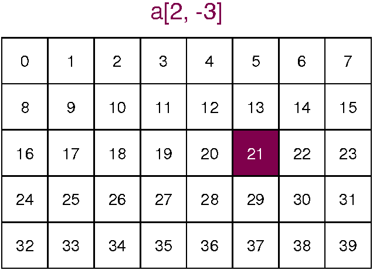 (imagen extraída de aquí)
{kind=link}
a = np.arange(40).reshape(5, 8)
print(a)
a[2, -3]
Para obtener más de un elemento hacemos slicing para cada eje: 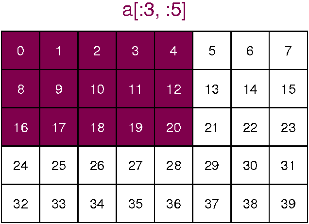 (imagen extraída de aquí)
{kind=link}
a[:3, :5]
¿Cómo podemos conseguir los elementos señalados en esta imagen? 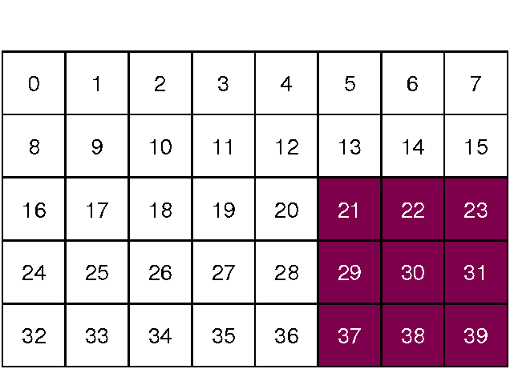
{kind=link}
(imagen extraída de aquí)
a[x:x ,x:x]
¿Cómo podemos conseguir los elementos señalados en esta imagen? 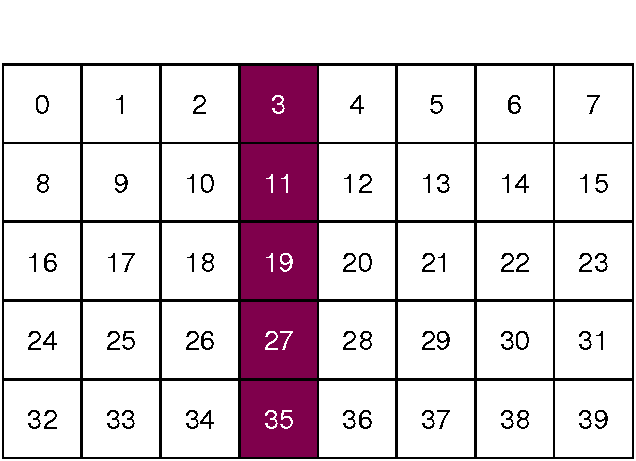
{kind=link}
(imagen extraída de aquí)
a[x:x ,x:x]
¿Cómo podemos conseguir los elementos señalados en esta imagen? 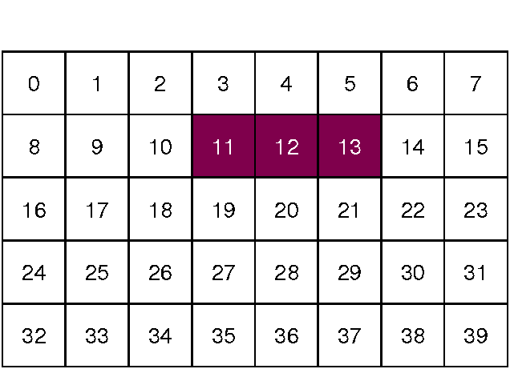
{kind=link}
(imagen extraída de aquí)
a[x:x ,x:x]
¿Cómo podemos conseguir los elementos señalados en esta imagen? 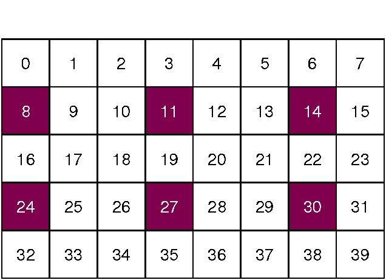
{kind=link}
(imagen extraída de aquí)
a[x:x ,x:x]
Soluciones a lo anterior:
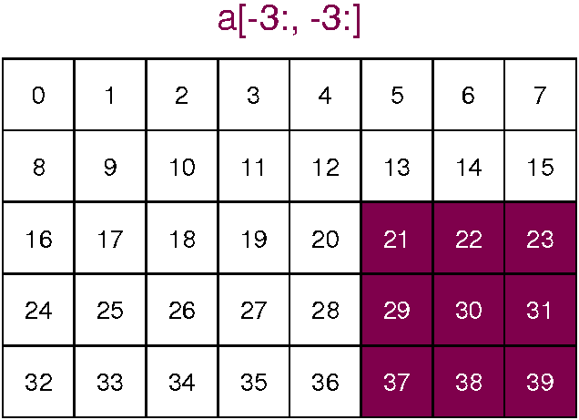 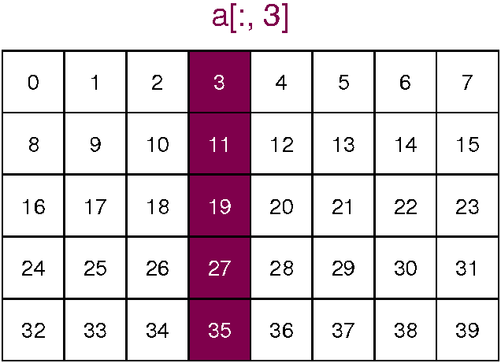 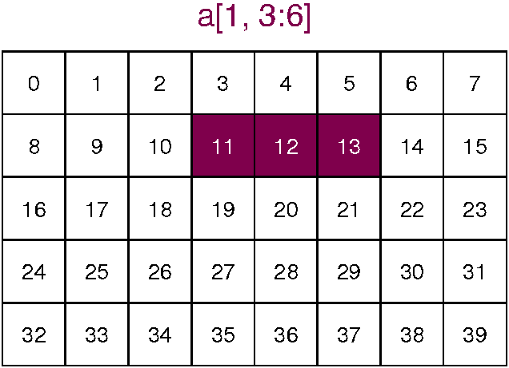 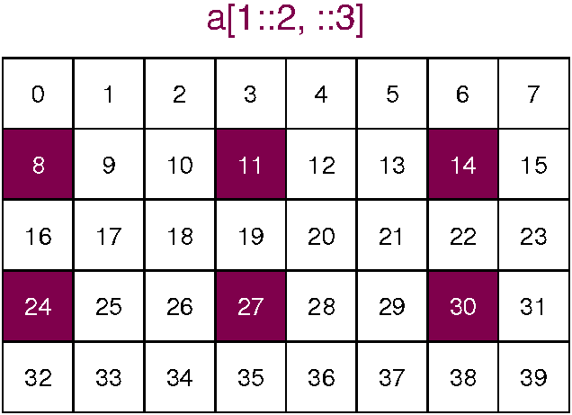{kind=link}
{kind=link}
{kind=link}
{kind=link}
(imágenes extraídas de aquí)
Fancy indexing
Con fancy indexing podemos hacer cosas tan variopintas como:
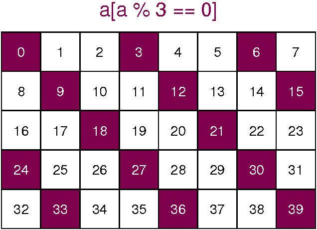 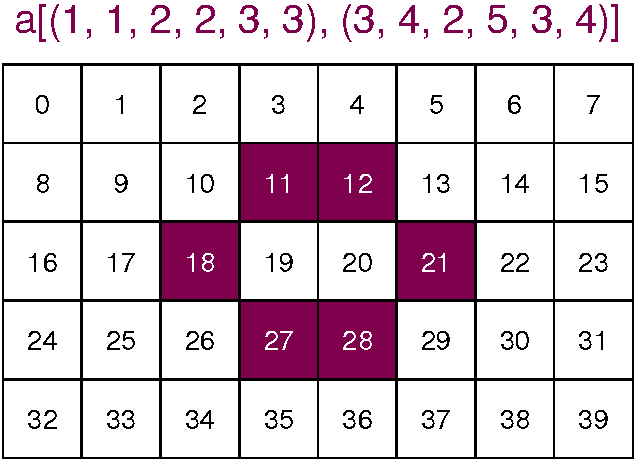{kind=link}
{kind=link}
(imágenes extraídas de aquí)
Es decir, podemos indexar usando ndarrays de booleanos ó usando listas de índices para extraer elementos concretos de una sola vez.
WARNING: En el momento que usamos fancy indexing nos devuelve un nuevo ndarray que no tiene porque conservar la estructura original.
Por ejemplo, en el siguiente caso no devuelve un ndarray de dos dimensiones porque la máscara no tiene porqué ser regular y, por tanto, devuelve solo los valores que cumplen el criterio en un vector (ndarray de una dimensión).
a = np.arange(10).reshape(2, 5)
print(a)
bool_indexes = (a % 2 == 0)
print(bool_indexes)
a[bool_indexes]
Sin embargo, sí que lo podríamos usar para modificar el ndarray original en base a un criterio y seguir manteniendo la misma forma.
a[bool_indexes] = 999
print(a)
Manejo de valores especiales#
numpy provee de varios valores especiales: np.nan, np.Inf, np.Infinity, np.inf, np.infty,…
a = 1 / np.arange(10)
print(a)
a[0] == np.inf
a.max() # Esto no es lo que queremos
a.mean() # Esto no es lo que queremos
a[np.isfinite(a)].max()
a[-1] = np.nan
print(a)
a.mean()
np.isnan(a)
np.isfinite(a)
np.isinf(a) # podéis mirar también np.isneginf, np.isposinf
numpy usa el estándar IEEE de números flotantes para aritmética (IEEE 754). Esto significa que Not a
Number no es equivalente a infinity. También, positive infinity no es equivalente a negative infinity. Pero infinity es equivalente a positive infinity.
1 < np.inf
1 < -np.inf
1 > -np.inf
1 == np.inf
1 < np.nan
1 > np.nan
1 == np.nan
Subarrays, vistas y copias#
¡IMPORTANTE!
Vistas y copias: numpy, por defecto, siempre devuelve vistas para evitar incrementos innecesarios de memoria. Este comportamiento difiere del de Python puro donde una rebanada (slicing) de una lista devuelve una copia. Si queremos una copia de un ndarray debemos obtenerla de forma explícita:
a = np.arange(10)
b = a[2:5]
print(a)
print(b)
b[0] = 222
print(a)
print(b)
Este comportamiento por defecto es realmente muy útil, significa que, trabajando con grandes conjuntos de datos, podemos acceder y procesar piezas de estos conjuntos de datos sin necesidad de copiar el buffer de datos original.
A veces, es necesario crear una copia. Esto se puede realizar fácilmente usando el método copy de los ndarrays. El ejemplo anterior usando una copia en lugar de una vista:
a = np.arange(10)
b = a[2:5].copy()
print(a)
print(b)
b[0] = 222
print(a)
print(b)
¿Cómo funcionan los ejes en un ndarray?#
Por ejemplo, cuando hacemos a.sum(), a.sum(axis=0), a.sum(axis=1).
¿Qué pasa si tenemos más de dos dimensiones?
Vamos a ver ejemplos:
a = np.arange(10).reshape(5,2)
a.shape
a.sum()
a.sum(axis=0)
a.sum(axis=1)
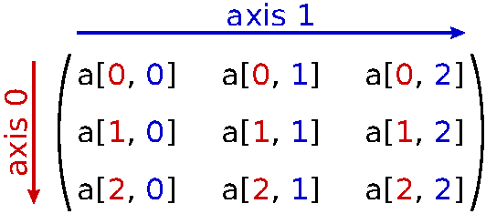 (imagen extraída de aquí)
a = np.arange(9).reshape(3, 3)
print(a)
print(a.sum(axis=0))
print(a.sum(axis=1))
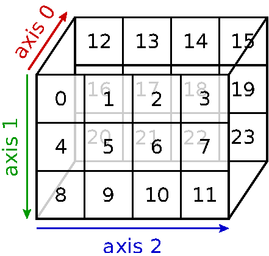 (imagen extraída de aquí)
a = np.arange(24).reshape(2, 3, 4)
print(a)
print(a.sum(axis=0))
print(a.sum(axis=1))
print(a.sum(axis=2))
Por ejemplo, en el primer caso, axis=0, lo que sucede es que cogemos todos los elementos del primer índice y aplicamos la operación para cada uno de los elementos de los otros dos ejes. Hecho de uno en uno sería lo siguiente:
print(a[:,0,0].sum(), a[:,0,1].sum(), a[:,0,2].sum(), a[:,0,3].sum())
print(a[:,1,0].sum(), a[:,1,1].sum(), a[:,1,2].sum(), a[:,1,3].sum())
print(a[:,2,0].sum(), a[:,2,1].sum(), a[:,2,2].sum(), a[:,2,3].sum())
Sin contar el eje que estamos usando, las dimensiones que quedan son 3 x 4 (segunda y tercera dimensiones) por lo que el resultado son 12 elementos.
Para el caso de axis=1:
print(a[0,:,0].sum(), a[0,:,1].sum(), a[0,:,2].sum(), a[0,:,3].sum())
print(a[1,:,0].sum(), a[1,:,1].sum(), a[1,:,2].sum(), a[1,:,3].sum())
Sin contar el eje que estamos usando, las dimensiones que quedan son 2 x 4 (primera y tercera dimensiones) por lo que el resultado son 8 elementos.
Para el caso de axis=2:
print(a[0,0,:].sum(), a[0,1,:].sum(), a[0,2,:].sum())
print(a[1,0,:].sum(), a[1,1,:].sum(), a[1,2,:].sum())
Sin contar el eje que estamos usando, las dimensiones que quedan son 2 x 3 (primera y segunda dimensiones) por lo que el resultado son 3 elementos.
Reformateo de ndarrays#
Podemos cambiar la forma de los ndarrays usando el método reshape. Por ejemplo, si queremos colocar los números del 1 al 9 en un grid 3 \times 3 lo podemos hacer de la siguiente forma:
a = np.arange(1, 10).reshape(3, 3)
Para que el cambio de forma no dé errores hemos de tener cuidado en que los tamaños del ndarray inicial y del ndarray final sean compatibles.
# Por ejemplo, lo siguiente dará error?
a = np.arange(1, 10). reshape(5, 2)
Otro patrón común de cambio de forma sería la conversion de un ndarray de 1D en uno de 2D añadiendo un nuevo eje. Lo podemos hacer usando, nuevamente, el método reshape o usando numpy.newaxis.
# Por ejemplo un array 2D de una fila
a = np.arange(3)
a1_2D = a.reshape(1,3)
a2_2D = a[np.newaxis, :]
print(a1_2D)
print(a1_2D.shape)
print(a2_2D)
print(a2_2D.shape)
# Por ejemplo un array 2D de una columna
a = np.arange(3)
a1_2D = a.reshape(3,1)
a2_2D = a[:, np.newaxis]
print(a1_2D)
print(a1_2D.shape)
print(a2_2D)
print(a2_2D.shape)
Broadcasting#
Es poible realizar operaciones en ndarrays de diferentes tamaños. En algunos casos numpy puede transformar estos ndarrays automáticamente de forma que todos tienen la misma forma. Esta conversión automática se llama broadcasting.
Normas del Broadcasting
Para determinar la interacción entre dos ndarrays en Numpy se sigue un conjunto de reglas estrictas:
Regla 1: Si dos
ndarrays difieren en su número de dimensiones la forma de aquel con menos dimensiones se rellena con 1’s a su derecha.
Regla 2: Si la forma de dos
ndarrays no es la misma en ninguna de sus dimensiones, elndarrycon forma igual a 1 en esa dimensión se ‘alarga’ para tener simulares dimensiones que los del otrosndarray.Regla 3: Si en cualquier dimensión el tamaño no es igual y ninguno de ellos es igual a 1 entonces obtendremos un error.
Resumiendo, cuando se opera en dos ndarrays, numpy compara sus formas (shapes) elemento a elemento. Empieza por las dimensiones más a la izquierda y trabaja hacia las siguientes dimensiones. Dos dimensiones son compatibles cuando
ambas son iguales o
una de ellas es 1
Si estas condiciones no se cumplen se lanzará una excepción ValueError: frames are not aligned indicando que los ndarrays tienen formas incompatibles. El tamaño del ndarray resultante es el tamaño máximo a lo largo de cada dimensión de los ndarrays de partida.
De forma más gráfica:
 (imagen extraída de aquí)
(imagen extraída de aquí)
a: 4 x 3 a: 4 x 3 a: 4 x 1
b: 4 x 3 b: 3 b: 3
result: 4 x 3 result: 4 x 3 result: 4 x 3
Intentemos reproducir los esquemas de la imagen anterior.
a = np.repeat((0, 10, 20, 30), 3).reshape(4, 3)
b = np.repeat((0, 1, 2), 4).reshape(3,4).T
print(a)
print(b)
print(a + b)
a = np.repeat((0, 10, 20, 30), 3).reshape(4, 3)
b = np.array((0, 1, 2))
print(a)
print(b)
print(a + b)
a = np.array((0, 10, 20, 30)).reshape(4,1)
b = np.array((0, 1, 2))
print(a)
print(b)
print(a + b)
ndarrays estructurados y recarrays#
Antes hemos comentado que los ndarrays deben ser homogéneos pero era un poco inexacto, en realidad, podemos tener ndarrays que tengan diferentes tipos. Estos se llaman ndarrays estructurados y recarrays.
Veamos ejemplos:
nombre = ['paca', 'pancracio', 'nemesia', 'eulogio']
edad = [72, 68, 86, 91]
a = np.array(np.zeros(4), dtype=[('name', '<S10'), ('age', np.int)])
a['name'] = nombre
a['age'] = edad
print(a)
Podemos acceder a las columnas por nombre
a['name']
A todos los elementos menos el primero
a['age'][1:]
Un recarray es similar pero podemos acceder a los campos con notación de punto (dot notation).
ra = a.view(np.recarray)
ra.name
Esto introduce un poco de overhead para acceder ya que se realizan algunas operaciones de más.
Concatenación y partición de ndarrays#
Podemos combinar múltiples ndarrays en uno o separar uno en varios.
Para concatenar podemos usar np.concatenate, np.hstack, np.vstack, np.dstack. Ejemplos:
a = np.array([1, 1, 1, 1])
b = np.array([2, 2, 2, 2])
Podemos concatenar esos dos arrays usando np.concatenate:
np.concatenate([a, b])
No solo podemos concatenar ndarrays de una sola dimensión:
np.concatenate([a.reshape(2, 2), b.reshape(2, 2)])
Podemos elegir sobre qué eje concatenamos:
np.concatenate([a.reshape(2, 2), b.reshape(2, 2)], axis=1)
Podemos concatenar más de dos arrays:
c = [3, 3, 3, 3]
np.concatenate([a, b, c])
Si queremos ser más explícitos podemos usar np.hstack o np.vstack. La h y la v son para horizontal y vertical, respectivamente.
np.hstack([a, b])
np.vstack([a, b])
Podemos concatenar en la tercera dimensión usamos np.dstack.
De la misma forma que podemos concatenar, podemos partir ndarrays usando np.split, np.hsplit, np.vsplit, np.dsplit.
# Intentamos entender como funciona la partición probando...
Funciones matemáticas, funciones universales ufuncs y vectorización#
¿Qué es eso de ufunc?
De la documentación oficial de Numpy:
A universal function (or ufunc for short) is a function that operates on ndarrays in an element-by-element fashion, supporting array broadcasting, type casting, and several other standard features. That is, a ufunc is a “vectorized” wrapper for a function that takes a fixed number of scalar inputs and produces a fixed number of scalar outputs.
Una ufunc es una Universal function o función universal que actúa sobre todos los elementos de un ndarray, es decir aplica la funcionalidad sobre cada uno de los elementos del ndarray. Esto se conoce como vectorización.
Por ejemplo, veamos la operación de elevar al cuadrado una lista en python puro o en numpy:
# En Python puro
a_list = list(range(10000))
%timeit [i ** 2 for i in a_list]
# En numpy
an_arr = np.arange(10000)
%timeit np.power(an_arr, 2)
a = np.arange(10)
np.power(a, 2)
La función anterior eleva al cuadrado cada uno de los elementos del ndarray anterior.
Dentro de numpy hay muchísimas ufuncs y scipy (no lo vamos a ver) dispone de muchas más ufuns mucho más especializadas.
En numpy tenemos, por ejemplo:
Funciones trigonométricas:
sin,cos,tan,arcsin,arccos,arctan,hypot,arctan2,degrees,radians,unwrap,deg2rad,rad2deg
# juguemos un poco con ellas
Funciones hiperbólicas:
sinh,cosh,tanh,arcsinh,arccosh,arctanh
# juguemos un poco con ellas
Redondeo:
around,round_,rint,fix,floor,ceil,trunc
# juguemos un poco con ellas
Sumas, productos, diferencias:
prod,sum,nansum,cumprod,cumsum,diff,ediff1d,gradient,cross,trapz
# juguemos un poco con ellas
Exponentes y logaritmos:
exp,expm1,exp2,log,log10,log2,log1p,logaddexp,logaddexp2
# juguemos un poco con ellas
Otras funciones especiales:
i0,sinc
# juguemos un poco con ellas
Trabajo con decimales:
signbit,copysign,frexp,ldexp
# juguemos un poco con ellas
Operaciones aritméticas:
add,reciprocal,negative,multiply,divide,power,subtract,true_divide,floor_divide,fmod,mod,modf,remainder
# juguemos un poco con ellas
Manejo de números complejos:
angle,real,imag,conj
# juguemos un poco con ellas
Miscelanea:
convolve,clip,sqrt,square,absolute,fabs,sign,maximum,minimum,fmax,fmin,nan_to_num,real_if_close,interp
…
# juguemos un poco con ellas
Referencias:
Estadística#
Orden:
amin,amax,nanmin,nanmax,ptp,percentile,nanpercentileMedias y varianzas:
median,average,mean,std,var,nanmedian,nanmean,nanstd,nanvarCorrelacionando:
corrcoef,correlate,covHistogramas:
histogram,histogram2d,histogramdd,bincount,digitize
…
# juguemos un poco con ellas
Ordenando, buscando y contando#
Ordenando:
sort,lexsort,argsort,ndarray.sort,msort,sort_complex,partition,argpartitionBuscando:
argmax,nanargmax,argmin,nanargmin,argwhere,nonzero,flatnonzero,where,searchsorted,extractContando:
count_nonzero
…
# juguemos un poco con ellas
Polinomios#
Series de potencias:
numpy.polynomial.polynomialClase Polynomial:
np.polynomial.PolynomialBásicos:
polyval,polyval2d,polyval3d,polygrid2d,polygrid3d,polyroots,polyfromrootsAjuste:
polyfit,polyvander,polyvander2d,polyvander3dCálculo:
polyder,polyintÁlgebra:
polyadd,polysub,polymul,polymulx,polydiv,polypowMiscelánea:
polycompanion,polydomain,polyzero,polyone,polyx,polytrim,polylineOtras funciones polinómicas:
Chebyshev,Legendre,Laguerre,Hermite
…
# juguemos un poco con ellas
Álgebra lineal#
Lo siguiente que se encuentra dentro de numpy.linalg vendrá precedido por LA.
Productos para vectores y matrices:
dot,vdot,inner,outer,matmul,tensordot,einsum,LA.matrix_power,kronDescomposiciones:
LA.cholesky,LA.qr,LA.svdEigenvalores:
LA.eig,LA.eigh,LA.eigvals,LA.eigvalshNormas y otros números:
LA.norm,LA.cond,LA.det,LA.matrix_rank,LA.slogdet,traceResolución de ecuaciones e inversión de matrices:
LA.solve,LA.tensorsolve,LA.lstsq,LA.inv,LA.pinv,LA.tensorinv
Dentro de scipy tenemos más cosas relacionadas.
# juguemos un poco con ellas
Manipulación de ndarrays#
tile, hstack, vstack, dstack, hsplit, vsplit, dsplit, repeat, reshape, ravel, resize,…
# juguemos un poco con ellas
Módulos de interés dentro de numpy#
Dentro de numpy podemos encontrar módulos para:
Usar números aleatorios:
np.randomUsar FFT:
np.fftUsar masked arrays:
np.maUsar polinomios:
np.polynomialUsar álgebra lineal:
np.linalgUsar matrices:
np.matlib…
Toda esta funcionalidad se puede ampliar y mejorar usando scipy.
Cálculo matricial#
a1 = np.repeat(2, 9).reshape(3, 3)
a2 = np.tile(2, (3, 3))
a3 = np.ones((3, 3), dtype=np.int) * 2
print(a1)
print(a2)
print(a3)
b = np.arange(1,4)
print(b)
print(a1.dot(b))
print(np.dot(a2, b))
print(a3 @ b) # only python version >= 3.5
Lo anterior lo hemos hecho usando ndarrays pero numpy también ofrece una estructura de datos matrix.
a_mat = np.matrix(a1)
a_mat
b_mat = np.matrix(b)
a_mat @ b_mat
a_mat @ b_mat.T
Como vemos, con los ndarrays no hace falta que seamos rigurosos con las dimensiones, en cambio, si usamos np.matrix como tipos hemos de realizar operaciones matriciales válidas (por ejemplo, que las dimensiones sean correctas).
A efectos prácticos, en general, los ndarrays se pueden usar como matrix conociendo estas pequeñas cosas.